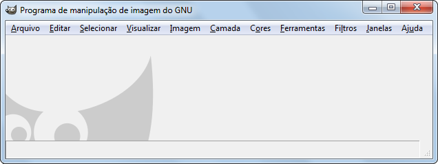

Figura 4.7. As caixas de diálogo das ferramentas desapareceram (use TAB)

Janela principal do GIMP com caixas de diálogo de ferramentas ocultas usando TAB.
Quando você vê apenas a janela da imagem e nenhuma das janelas de ferramentas, provavelmente pressionou TAB por acidente. Este é o atalho padrão para mostrar ou ocultar todos os docks.
Para corrigir isso, basta pressionar TAB novamente. Alternativamente, você pode usar → para alternar entre mostrar e ocultar.
![[Nota]](images/note.png)
|
Nota |
|---|---|
|
Às vezes, usar TAB para ocultar as caixas de diálogo das ferramentas não funciona. Isso acontece quando o foco está dentro das caixas de diálogo das ferramentas em vez de na imagem. Para remediar isso, coloque o foco na imagem, ou use o comando de menu mencionado acima. |